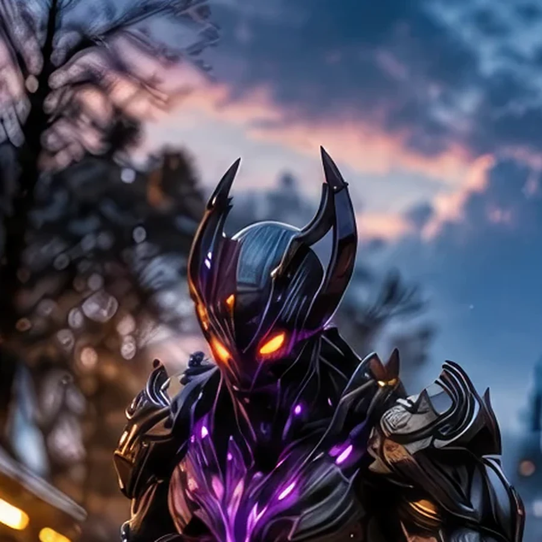

Field Observation
Korla concealed a hostile green alien web inside the window on the left. The hidden lattice embeds Synthbot surveillance infrastructure in Earth 1 commerce.
 ©
©
GENEZYS ARCHIVE · Synthbot
Bedlam Seeker
Identity & combat record
Archive node 01 / 04

Archive record
Korla never hunts a single target. The Bedlam Seeker chases chaos itself and cuts through every enemy within reach, exactly as the Accord demands. Whoever controls Korla from the other side of the portal seems to enjoy it a little too much.
Combat signature
Pursues through shifting pandemonium: Deals 60 damage to all.
Genezys 02:02 ™&©2026LEGIONS
Field intelligence
Archive node 02 / 04
FIELD REPORT // HOSTILE LATTICE

Mission successfulAdditional intelligence available
Field Observation
Korla concealed a hostile green alien web inside the window on the left. The hidden lattice embeds Synthbot surveillance infrastructure in Earth 1 commerce.
Environment
Object Analysis
Key Findings
Restricted visual records
Archive node 03 / 04

Motion archive
Archive node 04 / 04
Motion record not yet recovered